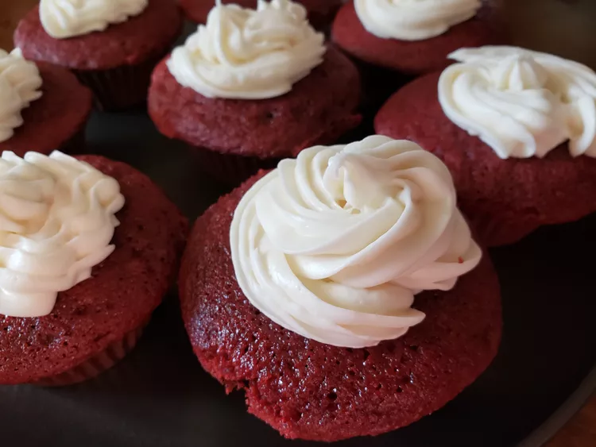

Cupcake's

These red velvet cupcakes are perfectly
sweet and wonderfully moist with a pleasant
hint of tanginess.
This easy dessert will quickly
become a staple in your recipe box!
Ingredients
- 2 ½ cups flour
- ½ cup unsweetened cocoa powder
- 1 teaspoon baking soda
- ½ teaspoon salt
- 2 cups sugar
- 1 cup butter, softened
- 4 large eggs
- cup sour cream
- ½ cup milk
- 1 (1 ounce) bottle McCormick® Red Food Color
- 2 teaspoons McCormick® Pure Vanilla Extract
Directions
- Preheat the oven to 350 degrees F (175 degrees C). Line 30 muffin cups with paper liners.
- Make cake: Mix together flour, cocoa powder, baking soda, and salt in a medium bowl; set aside.
- Beat sugar and butter in a large bowl with an electric mixer on medium speed until light and fluffy, about 5 minutes. Beat in eggs, one at a time. Mix in sour cream, milk, food color, and vanilla. Gradually beat in flour mixture on low speed until just blended; do not overbeat. Spoon batter into the prepared muffin cups, filling each 2/3 full.
- Bake in the preheated oven until a toothpick inserted into a cupcake comes out clean, about 20 minutes. Cool in the pans on a wire rack for 5 minutes. Remove cupcakes from the pans; cool completely.
- While cupcakes are cooling, make frosting: Beat cream cheese, butter, sour cream, and vanilla extract in a large bowl until light and fluffy. Gradually beat in confectioners' sugar until smooth.
- Spread or pipe frosting onto cooled cupcakes.
Cinnamon Rolls
Homepage